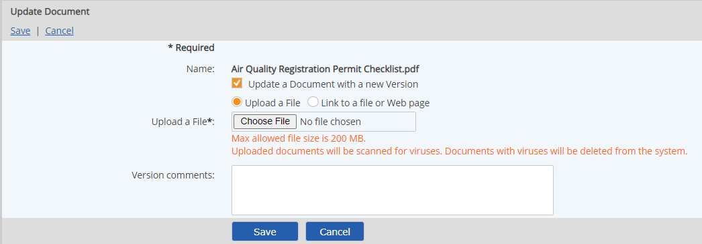
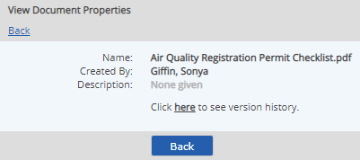

Different versions of a document may be stored in the system, so that when a document changes, you can update it with a new version. The latest version is automatically referenced by all existing document links.
You can roll back versions by setting any previous version stored in the system as the latest version.
All document links go to the same version—the version set as the current version. To maintain links to different versions, you need to create different documents in the system.
To update a document with a new version:
Right click the document and select Update.
If you only want to update the current version of the document with a version comment, you can enter comments and click Save.
The file extension is optional. Usually the content type or mime type is sufficient to identify it for opening with the appropriate application, but you may need to include the extension for rare types.
Enter Version Comments.
Use the Version Comments field to help identify the version or note changes. A version number will automatically be assigned.
Select Save.

When you create a new version of a document, the new file is automatically set as the current version. The latest version is automatically referenced by all existing document links.
If you do not want all existing document links to point to the new version, create a new document instead and associate the appropriate objects to each version.
Previous versions of a document may be viewed and managed from the document history. The document history can be accessed either from the right-click context menu or from the document properties.
To view previous versions of a document, right click the document and select Versions or from the document properties view, select the link to view the version history.

All the versions of the document in the system are listed with their details (date created, version number, file size and version comments). Click the column header to sort by any column. When viewing previous versions of a document, you can do any of the following:
Right click the version and select Open.
Right click the version and choose Revert to Version.
You must have Edit permission on the document to revert to a previous version.
Right click the version and choose Delete.
If you delete the current version, the previous version is automatically restored as the current version. You must have Edit permission on the document to delete a document version.